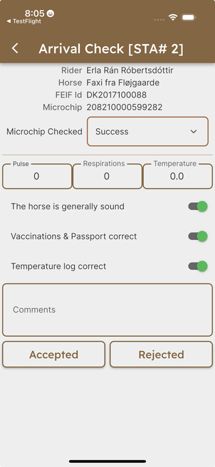

Equipment Check App¶
The Equipment Check App is the latest addition to the family of IceTest-NG tools. It allows officials (vets, ring masters, judges etc.) to conduct all checks mentioned in the FEIF Rules & Regulations to ensure the wellbeing of horses shown in competitions.
The app will document all checks and transfer the findings back to the IceTest-NG database. This way, all information is stored in one place and can be accessed by the data center manager, the judges and the officials.
Supported Checks¶
Currently, the app can be used to document the following checks according to the FEIF Rules & Regulations:
- Arrival check (normally only used at the World Championships)
- Fit-to-compete check (G5.1)
- Equipment check / exit check (G5.1)
- Shoeing check (G6.5)
- Identification check (S8.12)
Prerequisites¶
The following prerequisites must be met to use the Equipment Check App:
- You need to have a user account in IceTest-NG with the role "Judge" assigned.
- You need to have a smartphone or tablet device running iOS or Android.
- The competition must be taking place in Denmark, Germany, or under direct responsibility of FEIF (for example the World Championships).
Installation¶
iPhone / iPad users can download the app from the App Store by visiting the following link: Equipment Check App for iOS.
Android users can download the app from the Play Store here: Equipment Check App for Android.
Sign up / Login¶
When running the app for the first time, you will need to sign up with your email address. This email address must be the same as the one you are registered with as an official in IceTest-NG. If you are not sure which email address you are registered with, please contact the data center manager of the competition.
After signing up, you will receive a confirmation email (check your spam folder in case you don't see the message in your inbox). Please click on the link in the email to confirm your account. After that, you can log in with your email address and password.
Please note: Your login credentials for the Equipment Check App are separate from your IceTest-NG credentials. Both share the same email address, but have different password. Once you created your login credentials for the app, you can use them for all future logins on as many devices and competitions as needed.
List of Competitions¶
After logging in, you will see a list of current or upcoming competitions you are assigned to as an official. Tap the competition you want to work with to proceed.
Please refer to the training section below to learn how to practice with the app before your first "real" competition.
Conducting Checks¶
Arrival¶
This checks is usually done by a veterinarian as soon as the horse arrives at the competition grounds.
This is a very minimal check to confirm the horse's identity, vaccination history, temperature logging records and very basic health information.

The first step is to scan the horses's microchip to confirm the chip matches the information at the top of the screen. The veterinarian uses the drop-down option to indicate the outcome of the microchip scan.
The veterinarian then enters the temperature, respirations, and pulse observations. The three check sliders are used to confirm the general health of the horse, the vaccination schedule and its record in the passport, and that a correct temperature log is present. In rare cases, the verterinarian can use the comment box to record any other observations. This, normally, would only happen if a horse is not accepted into the competition grounds.
Finally, the veterinarian completes the arrival using the Accepted or Rejected button to capture the overall conclusion of the arrival process.
Fit-to-Compete¶
This check is usually done by a veterinarian after arrival of the horse at the competition grounds.
The team can find a list of all starting combinations in the Fit to Compete test in the list of all the test phases at the competition. The list shows all starting combinations together with an indication of which have been checked. You may also use the search feature at the top of the screen to quickly find a combination based on the Starting Number, Rider, or Horse.
After selecting the horse from the list of participating horses, its pulse, respiration rate, and temperature can be entered along with additional comments. In case any wounds are found, they can be documented as described in the Equipment Check section.
Possible outcomes are "Accepted", "Recheck", and "Rejected". If a horse is accepted the status will change in IceTest from ENTERED to READY. If a horse is set for recheck it will appear in the Fit to Compete RECHECK list automatically. If a horse is rejected the status in IceTest will be set to CANCELLED.
The competition office should be informed about any horses which are rejected so they may make sure the test entries and any charges related to the competition are handled correctly.
Shoeing¶
The shoeing check is sometimes done before the horse starts for the first time in the competition, but it can also be done at any time during the competition.
After selecting the horse from the list of participating horses, a variety of items can be documented. This includes the length of all four toes, the thickness of the shoes, the presence of studs, cores, pads and rings. The official can also take pictures of the shoeing and add comments.
Possible outcomes are "Accepted", "Recheck", and "Rejected". If a horse is selected for recheck it will automatically be placed in the list of shoeing rechecks. Findings of accepted or rejected are not passed along to IceTest. If a horse is removed from the competition entirely because of unacceptable shoeing, the competition office must get involved to make the necessary changes in IceTest.
Equipment¶
Equipment or exit checks are done right after the horse has left the track after the class. Both the equipment used and the horse itself are checked.
The app will offer all start lists of the competition by mentioning its test code and phase ("V1 PREL", "T3 AFIN", and so on). A start list will show a random selection of horses to be checked, but you can flip the "Show all?" switch at the top to see all horses. In addition, you can filter the list by Starting Number, the name of the horse, or the rider in the search field.
After selecting a horse combination the list, a variety of items can be documented. This includes details about the bit, the bridle, boots, and other protective equipment. There's also room for notes on the shoeing.
If any injuries are found, they can be documented as well toward the bottom of the screen:
- Begin by selecting either the "Mouth" or "Leg" button.
- Locate the position of the wound by tapping on the corresponding area of the horse image.
- Fill in the details of the wound, including its type, size, and any other relevant information.
- You can also take a picture of the wound and add comments.
- Finally, select the "Save" button to store the wound information.
The app will automatically calculate the total wound score based on the number of wounds and their severity. The official can finally select the outcome of the check: "Accepted" or "Disqualified".
If there are no injuries, the official can push the "Save Equipment" button and go back to the start list right away.
In the upper right corner, there are two round icons. The first one brings up any other injuries of the horse that have been documented during the same competition. The second one shows the results of a previous shoeing check from the same competition. This way, the official can compare the current check with previous ones.
Identification¶
The identification check is part of the Arrival, Fit to Compete and Equipment checks mentioned above. It's a simple check to verify the identity of the horse by microchip.
The app shows the microchip number, FEIF-ID, and name of the selected horse. The official can check the microchip number with a microchip reader and compare the reading to the chip number shown in the app. Then, they can confirm/unconfirm the identity by selecting "Success" or "Failure" from the dropdown menu.
Possible outcomes are "Success" and "Failure", and "No Attempt".
Demo Account¶
If you want to try out the app before your first competition, you can use the demo account. Please contact us at support@icetestng.com to get the login credentials. The demo account is a fully functional version of the app, but it does not store any data in the IceTest-NG database. This way, you can practice with the app without affecting any real competition data.